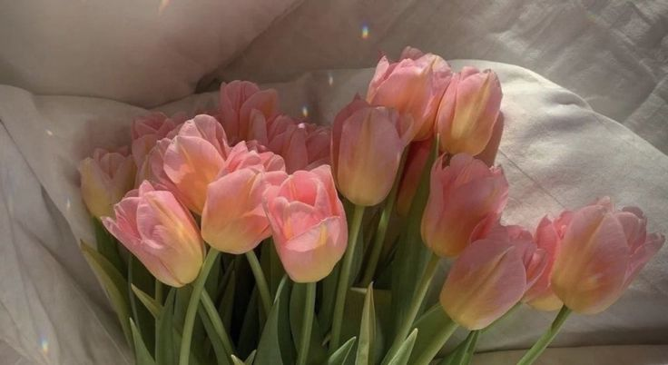
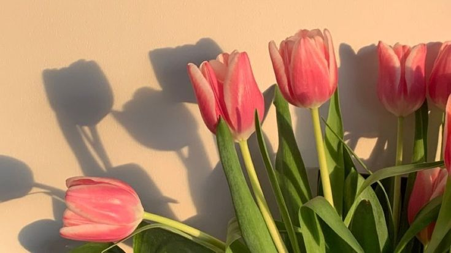
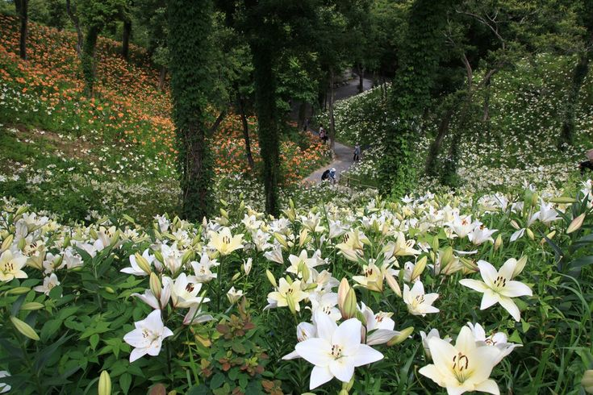

Roses
Most Popular Places Roses are Grown
- Rose Valley, Bulgaria
- Fun fact: Rose Valley, located in Bulgaria, is one of the largest producers of rose oil in the world. The region's mild climate and fertile soil provide optimal conditions for rose cultivation.
- Isparta, Turkey
- Fun fact: Isparta, known as the "City of Roses," is famous for its rose production, particularly the Damascus rose variety. The city's unique climate and soil composition contribute to the quality of its roses.
- Provence, France
- Fun fact: Provence, in the south of France, is renowned for its fields of fragrant lavender and roses. The region's sunny climate and well-drained soil create an ideal environment for growing roses.
Tulips
Most Popular Places Tulips are Grown
- Keukenhof Gardens, Netherlands
- Fun fact: Keukenhof Gardens, located in the Netherlands, is one of the largest flower gardens in the world and is famous for its vibrant tulip displays.
- Skagit Valley, Washington, USA
- Fun fact: Skagit Valley in Washington state, USA, is known for its annual Tulip Festival, where visitors can enjoy acres of colorful tulip fields.
- Emirgan Park, Istanbul, Turkey
- Fun fact: Emirgan Park in Istanbul, Turkey, hosts a Tulip Festival every spring, showcasing thousands of tulips in various colors and varieties.
Lilies
Most Popular Places Lilies are Grown
- Madagascar
- Fun fact: Madagascar is home to several species of lilies, including the endemic Madagascar orchid lily (Angraecum sesquipedale), which has a unique relationship with the long-tongued moth for pollination.
- Japan
- Fun fact: Japan is famous for its traditional gardens, many of which feature lilies such as the Japanese lily (Lilium auratum) and the Japanese water lily (Lilium japonicum).
- California, USA
- Fun fact: California is known for its diverse flora, and lilies are no exception. The California lily (Lilium humboldtii) is native to the state and can be found in various habitats, from coastal bluffs to mountain slopes.